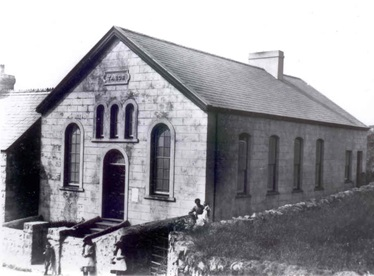

LLa cabane du coiffeur
Tout près de cette maison, à l’ombre d’un grand chène, était située la cabane en bois du coiffeur, Wil Bryncelyn. Parfois, Wil allait coiffer ses clients chez eux.
Tabor, Chapelle baptiste
Tout près de cette maison, à l’ombre d’un grand chène, était située la cabane en bois du coiffeur, Wil Bryncelyn. Parfois, Wil allait coiffer ses clients chez eux.